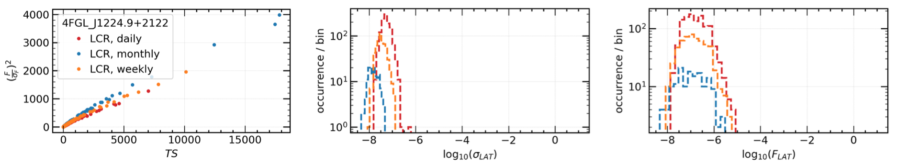
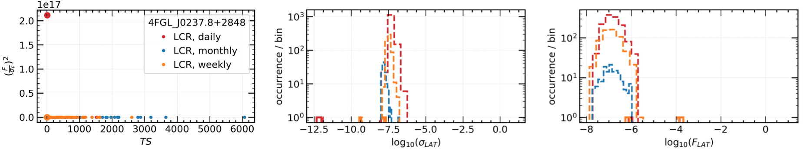

Fermi LAT Light Curve Repository (LCR)
Light Curve Repository Links
| The Light Curve Repository Sky Map |
| The Light Curve Repository Usage Notes |
| The Light Curve Repository Data Description |
| The Light Curve Repository FAQ |
Additional Information
| The Fermi Science Support Center |
| Fermi LAT & GBM Analysis Guide |
| Fermi LAT & GBM Data Access |
| Fermi All-Sky Variability Analysis (FAVA) |
Please reference Kocevski et al. 2021 for use of any results presented in the Fermi LAT Light Curve Repository. Also be sure to consult the LCR Usage Notes for important details and caveats about the LCR analysis.
About the Light Curve Repository
 Figure 1: A model map for a single time bin of the region surrounding 4FGL J0237.8+2848, which contains 15 other variable sources within a 12 deg radius, highlighting the need to model all variable sources within the region surrounding the source of interest.
Figure 1: A model map for a single time bin of the region surrounding 4FGL J0237.8+2848, which contains 15 other variable sources within a 12 deg radius, highlighting the need to model all variable sources within the region surrounding the source of interest.
Motivation:
The Fermi Large Area Telescope (LAT) Light Curve Repository (LCR) is a database of multi-cadence flux calibrated light curves for over 1500 sources deemed variable in the 10 year Fermi LAT point source (4FGL-DR2) catalog (Ballet et al. 2020). The light curves hosted by the LCR cover the entire ongoing Fermi mission duration and include data binned at 3 day, 1 week, and 1 month intervals and are continually updated as new data become available. The high duty cycle and long-term monitoring of the gamma-ray sky has made the LAT an important tool in the study of time-domain astronomy, provided the identification and regular monitoring of thousands of transient and variable sources. The LCR is intended to serve as a resource to the time-domain and multi-messenger communities by allowing users to quickly search the LAT data to identify correlated variability and flaring emission episodes from gamma-ray sources.
Sample Selection:
The LCR provides light curves for all sources in the 4FGL-DR2 catalog that exhibit a variability index greater than 21.67, where the variability index can be thought of as a proxy to the average fractional variability with dF/F measured on timescales of 1 year. As defined in the 4FGL-DR2 catalog, sources with a variability index greater than 21.67 over 12 intervals are estimated to have a < 1% chance of being a steady source. The resulting sample consists of 1525 sources, or roughly 26% of the 4FGL-DR2 catalog. A vast majority of these sources are blazars, further classified as flat spectrum radio quasars, BL Lacs, and blazars candidates of unknown type making up roughly 38%, 31%, and 24% of the repository sample respectively. Generating 3 day, 1 week, and 1 month light curves for each of these sources for over 13 years of data requires the analysis of over 3.7 million individual time bins.
Data Analysis:
Analysis Technique: The characterization of LAT sources is typically performed using a maximum likelihood analysis (Abdo et al. 2009, ApJS, 183, 46), in which a model describing the point sources and diffuse and isotropic gamma-ray emission in a given region of the sky are jointly optimized to best describe the observed photon distribution. The light curves generated by the LCR are obtained by performing an unbinned likelihood analysis, in which the full spatial and spectral information of each photon is used in the maximum likelihood optimization.
Analysis Tools & Data Selection: The LCR analysis is performed with the standard Fermi LAT science tools (version v11r5p3) using the P8R2_SOURCE_V6 instrument response functions on P8R3_SOURCE class photons selected over an energy range covering 100 MeV - 100 GeV. The photons are selected from a 12° radius energy-independent region of interest (ROI) centered on the location of the source of interest. The size of the ROI is chosen to reflect the 95% containment radius of the LAT energy-dependent point-spread function (PSF) at 100 MeV. Additional data selection cuts are imposed to exclude photons associated with regions and periods of known solar flare and GRB activity, as well as a zenith angle cut of 90° to prevent contamination from gamma-rays from the Earth limb produced through interactions of cosmic rays with Earth’s atmosphere.
Data Modeling: The resulting distribution of counts for each source of interest is modeled as a point source using an energy-dependent LAT PSF and a photon spectrum drawn from the 4FGL-DR2 catalog. The normalization of the source spectrum in the model is left free to vary, while the spectral parameters are initially fixed to their 4FGL-DR2 catalog values. The model also includes all gamma-ray sources in the 4FGL-DR2 catalog within a radius of 30° centered on each ROI. The normalization of each variable source in the region is also left free to vary in the model, with spectral parameters fixed to their catalog values. In addition to the point sources, Galactic and isotropic background components are also included in the model. The Galactic component, gll_iem_v07.fits, is a spatial and spectral template that accounts for interstellar diffuse gamma-ray emission from the Milky Way. The isotropic component, iso_P8R3_SOURCE_V3_v1, provides a spectral template to account for all remaining isotropic emission, including contributions from both residual charged-particle backgrounds and the isotropic celestial gamma-ray emission. The normalization of both the Galactic and isotropic components are allowed to vary during the fit. The free parameters of the model are varied to maximize the likelihood of observing the data given the model. An iterative fitting strategy, which varies the required fit tolerance, is employed to minimize the number of bins in which the likelihood fit does not successfully convergence. Once an adequate fit is achieved, a second round of fitting is performed in which the photon index of the source of interest is allowed to vary.
Figure 1 shows a model map for a single time bin of the region surrounding 4FGL J0237.8+2848, which contains 15 other variable sources within a 12 deg radius (roughly corresponding to the 95% LAT PSF at 100 MeV). The source flux for each time bin is fit while simultaneously accounting for the flux variations of all other variable sources within the region of interest.
Source Detection Criteria: The analysis employs a likelihood ratio test (Neyman & Pearson 1928) to quantify the significance of the source of interest above the expected background. The analysis utilizes a test statistic (TS) that is twice the ratio of the likelihood evaluated at the best-fit parameters under a background-only, null hypothesis, i.e., a model that does not include a source of interest, to the likelihood evaluated at the best-fit model parameters when including the source at the center of the ROI (Mattox et al. 1996). This ratio is distributed approximately as χ2 (Wilks 1938), and the analysis rejects the null hypothesis when the test statistic is greater than TS>=4, or roughly equivalent to a 2σ rejection criterion for a single degree of freedom. Using this test statistic as the detection criterion, the LCR estimates the observed LAT flux for sources with TS>=4 and uses a Bayesian profile likelihood method to calculate upper limits for intervals that yield a TS<4. The resulting best fit flux determination (or upper limit) and spectral shape, for both fixed and free photon index fits, are reported by the LCR.
Computational Strategy: For a relatively small number of counts, an unbinned likelihood analysis can be performed rapidly, but as the number of counts increases, the time to perform the analysis can become prohibitive. This limitation becomes increasingly burdensome when the need arises to perform source characterization over a large number of time bins. Binned likelihood analysis can help alleviate some of these issues, but since information is lost when binning data, there exists a trade off between the number of bins to use (e.g. computing time) and the accuracy of the final results. The LCR tackles the computational overhead by parallelizing the process of performing a full unbinned likelihood analysis. In order to produce a high cadence light curve over the entire lifetime of the mission in a reasonable amount of time, the LCR distributes the analysis of each light curve bin to a separate node in a computer cluster hosted at the SLAC National Accelerator Center. The parallelization allows for thousands of time bins to be analyzed simultaneously, with the net effect of drastically reducing the time it takes to generate mission duration light curves. Figure 2 shows the resulting 3-day light curve covering over 11 years of LAT data for the source 4FGL J0237.8+2848.

Figure 2: An example 3-day light curve covering over 11 years of LAT data for the source 4FGL J0237.8+2848 at the center of Figure 1.
Likelihood Analysis Summary:
Data Access:
There are multiple ways to download the LCR data for offline analysis. The light curve data for individual sources can be downloaded in CSV or JSON formats through their specific Source Report pages, e.g. 4FGL J0001.5+2113. The data can also be obtained through a python API interface called pyLCR. The python module includes scriptable functions to download the lightcurve data and helper functions to plot and examine the data. Consult the GitHub README to learn more about how to install and use the API module.
Usage Notes and Important Caveats:
The LCR is based on the successful Fermi All-sky Variability Analysis (FAVA), which has been extremely effective at identifying transient sources in the LAT data. FAVA is a photometric technique that searches for flaring sources by comparing the observed flux from a region of the sky to the expected flux based on the observed long-term average emission collected over the course of the Fermi mission. This analysis has the advantage of being independent of any model for the diffuse gamma-ray emission and does not make any assumptions about the spectral shape of the gamma-ray sources as is required in a traditional likelihood analysis. Although very effective at detecting flaring emission, FAVA is less effective for the long-term characterization of a source, especially for those near other variable sources. Because of the large PSF of the LAT (as much as a 12° 95% containment radius at 100 MeV when using P8R3_SOURCE_V2) care must be taken in interpreting emission excesses at a particular location in the sky, as emission from a nearby flaring source will be detected over a large region of the sky. The LCR provides light curves generated through a full likelihood analysis that simultaneously models both the source of interest and all sources in the surrounding region, providing calibrated flux and photon index measurements for each time bin that take into account variability from nearby sources. Therefore, while FAVA is an effective flare detection method, the LCR analysis is intended to be a resource for long baseline source characterization.
Credits:
The LCR is currently maintained by Daniel Kocevski (NASA MSFC), with additional support from Janeth Valverde (GSFC/CRESST), Simone Garrappa (DESY), Michela Negro (GSFC/CRESST), Jean Ballet (CEA Saclay) and Benoit Lott (CNRS/IN2P3, Université de Bordeaux), on behalf of NASA and the Fermi Large Area Telescope Collaboration. The website interface was designed by Daniel Kocevski, using Olaf Frohn's D3-Celestial sky map code, the Highcharts javascript plotting library, and the Bootstrap toolkit. The development of the LCR has been funded in part through the Fermi Guest Investigator Program (NASA Research Announcements NNH19ZDA001N and NNH20ZDA001N).
Code Availability:
The LCR front- and back-end code is publicly available as a GitHub repository. User contributions to the GitHub repository are welcomed and encouraged! The LCR likelihood analysis code is available upon request. Please contact fermilcr@athena.gsfc.nasa.gov for more information on obtaining the analysis code.
Further Reading:
Fermi Large Area Telescope Fourth Source Catalog - Abdollahi et al. 2020, ApJS, 247, 33A
The Fermi LAT Cicerone - Documentation on the Fermi-LAT science tools and the data analysis techniques.
An Unbinned Likelihood Tutorial - A full tutorial on the use of unbinned likelihood analysis to analyze Fermi LAT data.
The Fermi Large Area Telescope (LAT) Light Curve Repository (LCR) is a database of multi-cadence flux calibrated light curves for over 1500 sources deemed variable in the 10 year Fermi LAT point source (4FGL-DR2) catalog (Ballet et al. 2020). The light curves hosted by the LCR cover the entire ongoing Fermi mission duration and include data binned at 3 day, 1 week, and 1 month intervals and are continually updated as new data become available. The high duty cycle and long-term monitoring of the gamma-ray sky has made the LAT an important tool in the study of time-domain astronomy, provided the identification and regular monitoring of thousands of transient and variable sources. The LCR is intended to serve as a resource to the time-domain and multi-messenger communities by allowing users to quickly search the LAT data to identify correlated variability and flaring emission episodes from gamma-ray sources.
Sample Selection:
The LCR provides light curves for all sources in the 4FGL-DR2 catalog that exhibit a variability index greater than 21.67, where the variability index can be thought of as a proxy to the average fractional variability with dF/F measured on timescales of 1 year. As defined in the 4FGL-DR2 catalog, sources with a variability index greater than 21.67 over 12 intervals are estimated to have a < 1% chance of being a steady source. The resulting sample consists of 1525 sources, or roughly 26% of the 4FGL-DR2 catalog. A vast majority of these sources are blazars, further classified as flat spectrum radio quasars, BL Lacs, and blazars candidates of unknown type making up roughly 38%, 31%, and 24% of the repository sample respectively. Generating 3 day, 1 week, and 1 month light curves for each of these sources for over 13 years of data requires the analysis of over 3.7 million individual time bins.
Data Analysis:
Analysis Technique: The characterization of LAT sources is typically performed using a maximum likelihood analysis (Abdo et al. 2009, ApJS, 183, 46), in which a model describing the point sources and diffuse and isotropic gamma-ray emission in a given region of the sky are jointly optimized to best describe the observed photon distribution. The light curves generated by the LCR are obtained by performing an unbinned likelihood analysis, in which the full spatial and spectral information of each photon is used in the maximum likelihood optimization.
Analysis Tools & Data Selection: The LCR analysis is performed with the standard Fermi LAT science tools (version v11r5p3) using the P8R2_SOURCE_V6 instrument response functions on P8R3_SOURCE class photons selected over an energy range covering 100 MeV - 100 GeV. The photons are selected from a 12° radius energy-independent region of interest (ROI) centered on the location of the source of interest. The size of the ROI is chosen to reflect the 95% containment radius of the LAT energy-dependent point-spread function (PSF) at 100 MeV. Additional data selection cuts are imposed to exclude photons associated with regions and periods of known solar flare and GRB activity, as well as a zenith angle cut of 90° to prevent contamination from gamma-rays from the Earth limb produced through interactions of cosmic rays with Earth’s atmosphere.
Data Modeling: The resulting distribution of counts for each source of interest is modeled as a point source using an energy-dependent LAT PSF and a photon spectrum drawn from the 4FGL-DR2 catalog. The normalization of the source spectrum in the model is left free to vary, while the spectral parameters are initially fixed to their 4FGL-DR2 catalog values. The model also includes all gamma-ray sources in the 4FGL-DR2 catalog within a radius of 30° centered on each ROI. The normalization of each variable source in the region is also left free to vary in the model, with spectral parameters fixed to their catalog values. In addition to the point sources, Galactic and isotropic background components are also included in the model. The Galactic component, gll_iem_v07.fits, is a spatial and spectral template that accounts for interstellar diffuse gamma-ray emission from the Milky Way. The isotropic component, iso_P8R3_SOURCE_V3_v1, provides a spectral template to account for all remaining isotropic emission, including contributions from both residual charged-particle backgrounds and the isotropic celestial gamma-ray emission. The normalization of both the Galactic and isotropic components are allowed to vary during the fit. The free parameters of the model are varied to maximize the likelihood of observing the data given the model. An iterative fitting strategy, which varies the required fit tolerance, is employed to minimize the number of bins in which the likelihood fit does not successfully convergence. Once an adequate fit is achieved, a second round of fitting is performed in which the photon index of the source of interest is allowed to vary.
Figure 1 shows a model map for a single time bin of the region surrounding 4FGL J0237.8+2848, which contains 15 other variable sources within a 12 deg radius (roughly corresponding to the 95% LAT PSF at 100 MeV). The source flux for each time bin is fit while simultaneously accounting for the flux variations of all other variable sources within the region of interest.
Source Detection Criteria: The analysis employs a likelihood ratio test (Neyman & Pearson 1928) to quantify the significance of the source of interest above the expected background. The analysis utilizes a test statistic (TS) that is twice the ratio of the likelihood evaluated at the best-fit parameters under a background-only, null hypothesis, i.e., a model that does not include a source of interest, to the likelihood evaluated at the best-fit model parameters when including the source at the center of the ROI (Mattox et al. 1996). This ratio is distributed approximately as χ2 (Wilks 1938), and the analysis rejects the null hypothesis when the test statistic is greater than TS>=4, or roughly equivalent to a 2σ rejection criterion for a single degree of freedom. Using this test statistic as the detection criterion, the LCR estimates the observed LAT flux for sources with TS>=4 and uses a Bayesian profile likelihood method to calculate upper limits for intervals that yield a TS<4. The resulting best fit flux determination (or upper limit) and spectral shape, for both fixed and free photon index fits, are reported by the LCR.
Computational Strategy: For a relatively small number of counts, an unbinned likelihood analysis can be performed rapidly, but as the number of counts increases, the time to perform the analysis can become prohibitive. This limitation becomes increasingly burdensome when the need arises to perform source characterization over a large number of time bins. Binned likelihood analysis can help alleviate some of these issues, but since information is lost when binning data, there exists a trade off between the number of bins to use (e.g. computing time) and the accuracy of the final results. The LCR tackles the computational overhead by parallelizing the process of performing a full unbinned likelihood analysis. In order to produce a high cadence light curve over the entire lifetime of the mission in a reasonable amount of time, the LCR distributes the analysis of each light curve bin to a separate node in a computer cluster hosted at the SLAC National Accelerator Center. The parallelization allows for thousands of time bins to be analyzed simultaneously, with the net effect of drastically reducing the time it takes to generate mission duration light curves. Figure 2 shows the resulting 3-day light curve covering over 11 years of LAT data for the source 4FGL J0237.8+2848.
Figure 2: An example 3-day light curve covering over 11 years of LAT data for the source 4FGL J0237.8+2848 at the center of Figure 1.
Likelihood Analysis Summary:
| Time bins | 3 day, 1 week, and 1 month |
| Energy bins | 100 MeV - 100 GeV |
| Event selection | P8R3_SOURCE |
| Instrument response function | P8R3_SOURCE_V2 |
| Acceptance cone (ROI) | 12 deg (radius) |
| Zenith angle cut (zmax) | 90 deg |
| Fit optimizer | MINUIT |
| Galactic interstellar emission model | gll_iem_v07.fits |
| Isotropic spectral template | iso_P8R3_SOURCE_V3_v1 |
| 4FGL-DR2 catalog | gll_psc_v27.fit |
| Upper limits confidence level | 95% (Bayesian profile) |
| Minimum detection threshold | TS = 1-4 (~1-2σ) |
Data Access:
There are multiple ways to download the LCR data for offline analysis. The light curve data for individual sources can be downloaded in CSV or JSON formats through their specific Source Report pages, e.g. 4FGL J0001.5+2113. The data can also be obtained through a python API interface called pyLCR. The python module includes scriptable functions to download the lightcurve data and helper functions to plot and examine the data. Consult the GitHub README to learn more about how to install and use the API module.
Usage Notes and Important Caveats:
- The LCR provides fit results from both convergent and non-convergent likelihood analyses. However, it is important that the end user is aware that results from non-convergent analyses should be considered suspect and should not be used for higher level analyses (e.g. multifrequency cross-correlation, PSD, Bayesian blocks studies). The source specific report pages do not display this data by default, but do include an option to include this data in the light curve results.
- The LCR provides fit results from likelihood analyses where the photon index of the source is at the minimum or maximum of the allowable parameter range. These results should be considered as being estimated from unconstrained fits, since the the true minimum of the fit was likely not attained, and should likely not be used for higher level analyses. As with the non-convergant fits, the source specific report pages do not display data for unconstrained fits by default, but an option to include this data in the light curve results is provided to the user.
- The likelihood test statistic (TS) is defined to be positive. However, negative TS values can sometimes be obtained when the parameters reach the limits of their allowed intervals without having maximized the likelihood profile. Fit results obtained from interval that resulted in negative TS values should be considered suspect and not used in higher level analyses.
- While time intervals containing gamma-ray bursts and solar flare episodes have been removed from the LAT data prior to the likelihood analyses performed to obtain the light curves provided by the LCR; possible contamination by the proximity of the quiescent Sun or Moon has not been accounted for, nor have those time ranges been excluded.
- Because the LCR analysis are made available in real-time, the results are not validated by the LAT collaboration prior to release. Users are encouraged to perform sanity checks by examining the flux to flux uncertainty ratio versus the square root of the TS, and at the fit result distributions, e.g. flux, flux uncertainties, spectral indices mean values (photon index, alpha, etc) and their uncertainties. Some examples of these are shown in Figure 3. The flux over flux uncertainty ratio is expected to behave approximately linearly to the square root of the TS. Any outlier should be either further investigated or removed before using the data for higher level analysis. Outliers from the data distributions or portions of data distributed differently should be further investigated or removed before performing higher level analyses.
- Erroneously high flux values during periods of low exposure. After the inital release of the LCR data, it was discovered that a relatively small number of sources can experience large over-estimates of their flux values during periods of abnormally low exposure. These low-exposure periods have occured due to the modified rocking profiles that were implemented to mitigate the effects of the Solar Array Drive Assembly (SADA) anomaly, which occured on March 16 2018. As a result of the anomoly, the LAT all-sky observing effeciency decreases during periods in which the angle between Fermi's orbital plane and the Sun, i.e. the beta angle, is greater than 24°, resulting in lower than usual exposure for high and low declination sources. The errounous photon flux estimates that have occured during these low exposure periods are easily identified as significant outliers in the flux over flux uncertainty ratio sanity check described above. By default, these data points are filtered and not displayed in the light curve analysis results, but an option does exists to display this data in the source specific report pages. You can read more about the Fermi SADA anomaly and its effects on science performance here.


Figure 3: The square of the ratio of the flux over its uncertainty is expected to be proportional to the TS, as the top left panel shows. Outliers, such as the one shown in the bottom left panel, should be further investigated or removed. The bottom distributions of flux and flux uncertainty show some outliers that, in this case, correspond to non-convergent analyses. However, outliers are not necessarily limited to non-convergent cases.
The Light Curve Repository vs. the Fermi All-Sky Variability AnalysisFigure 3: The square of the ratio of the flux over its uncertainty is expected to be proportional to the TS, as the top left panel shows. Outliers, such as the one shown in the bottom left panel, should be further investigated or removed. The bottom distributions of flux and flux uncertainty show some outliers that, in this case, correspond to non-convergent analyses. However, outliers are not necessarily limited to non-convergent cases.
The LCR is based on the successful Fermi All-sky Variability Analysis (FAVA), which has been extremely effective at identifying transient sources in the LAT data. FAVA is a photometric technique that searches for flaring sources by comparing the observed flux from a region of the sky to the expected flux based on the observed long-term average emission collected over the course of the Fermi mission. This analysis has the advantage of being independent of any model for the diffuse gamma-ray emission and does not make any assumptions about the spectral shape of the gamma-ray sources as is required in a traditional likelihood analysis. Although very effective at detecting flaring emission, FAVA is less effective for the long-term characterization of a source, especially for those near other variable sources. Because of the large PSF of the LAT (as much as a 12° 95% containment radius at 100 MeV when using P8R3_SOURCE_V2) care must be taken in interpreting emission excesses at a particular location in the sky, as emission from a nearby flaring source will be detected over a large region of the sky. The LCR provides light curves generated through a full likelihood analysis that simultaneously models both the source of interest and all sources in the surrounding region, providing calibrated flux and photon index measurements for each time bin that take into account variability from nearby sources. Therefore, while FAVA is an effective flare detection method, the LCR analysis is intended to be a resource for long baseline source characterization.
Credits:
The LCR is currently maintained by Daniel Kocevski (NASA MSFC), with additional support from Janeth Valverde (GSFC/CRESST), Simone Garrappa (DESY), Michela Negro (GSFC/CRESST), Jean Ballet (CEA Saclay) and Benoit Lott (CNRS/IN2P3, Université de Bordeaux), on behalf of NASA and the Fermi Large Area Telescope Collaboration. The website interface was designed by Daniel Kocevski, using Olaf Frohn's D3-Celestial sky map code, the Highcharts javascript plotting library, and the Bootstrap toolkit. The development of the LCR has been funded in part through the Fermi Guest Investigator Program (NASA Research Announcements NNH19ZDA001N and NNH20ZDA001N).
Code Availability:
The LCR front- and back-end code is publicly available as a GitHub repository. User contributions to the GitHub repository are welcomed and encouraged! The LCR likelihood analysis code is available upon request. Please contact fermilcr@athena.gsfc.nasa.gov for more information on obtaining the analysis code.
Further Reading:
Fermi Large Area Telescope Fourth Source Catalog - Abdollahi et al. 2020, ApJS, 247, 33A
The Fermi LAT Cicerone - Documentation on the Fermi-LAT science tools and the data analysis techniques.
An Unbinned Likelihood Tutorial - A full tutorial on the use of unbinned likelihood analysis to analyze Fermi LAT data.